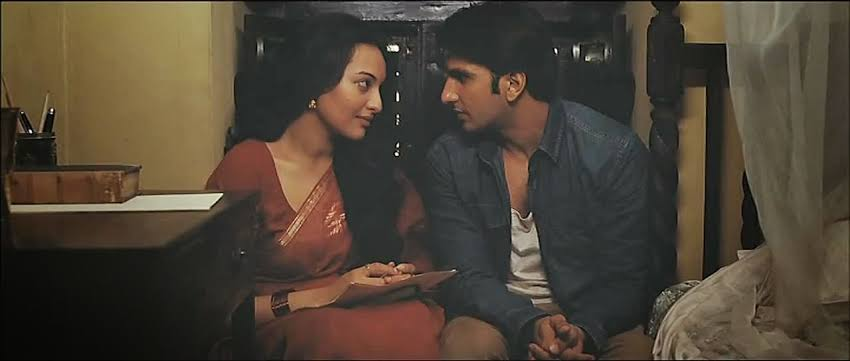
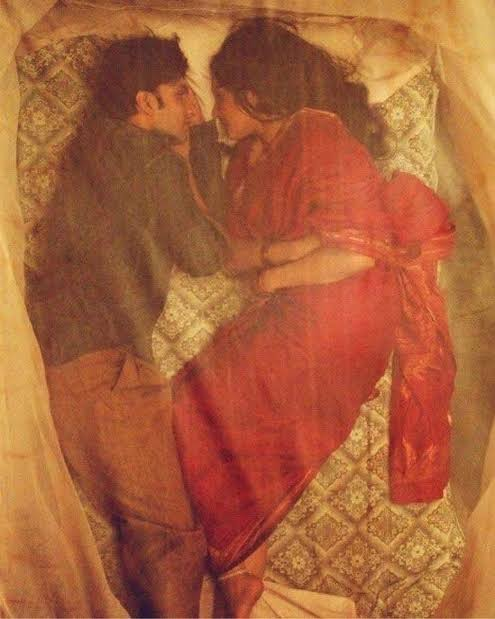
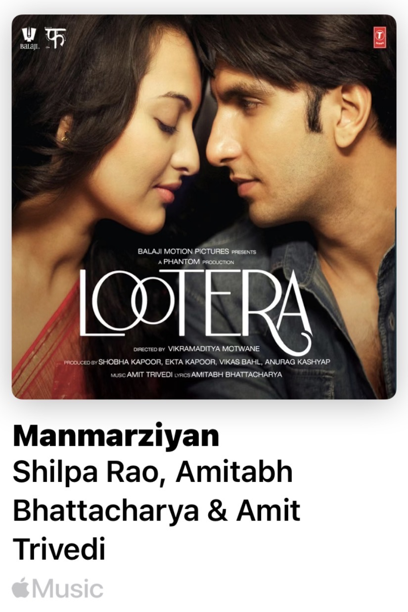

Lootera is my all-time favorite film, and there are many reasons why it has stayed with me for so many years. The biggest one is the performances. Ranveer Singh delivers what I still believe is the finest performance of his career. The story itself has never left my mind. From the way it begins to the way it ends, every moment feels carefully crafted. Whenever a film truly connects with me through its storytelling or direction, it stays in my thoughts long after I’ve finished watching it. Lootera did exactly that. This was also the film that introduced me to the beauty of cinematic filmmaking. Every frame feels like a painting, with thoughtful composition, beautiful lighting, and a quiet atmosphere that perfectly matches the emotions of the story. It made me appreciate filmmaking as an art form rather than just entertainment. One of the things I admire most is how the film portrays intimacy. It creates a deep emotional connection between the characters without relying on explicit scenes. Everything is expressed with subtle gestures, silence, and trust, making their relationship feel genuine and unforgettable. I first watched Lootera as a teenager, and its emotions, visuals, and storytelling have stayed with me ever since. Even today, after watching countless films, I still consider Lootera my all-time favorite. It is the movie that changed the way I look at cinema


I also have to mention the soundtrack because it’s one of the biggest reasons Lootera means so much to me. This is one of those rare albums where there isn’t a single song I skip. Every track feels like an essential part of the film’s emotional journey. Amit Trivedi’s music is simply extraordinary, blending beautifully with the story and its atmosphere.

And then there’s “Manmarziyan”—the soul of the entire album. It’s my favorite song from Lootera. Every time it begins, it feels as if time slows down. The melody carries a quiet ache, while the lyrics speak the words the characters never could. It isn’t just a song; it’s longing, hope, love, and heartbreak flowing together in perfect harmony.